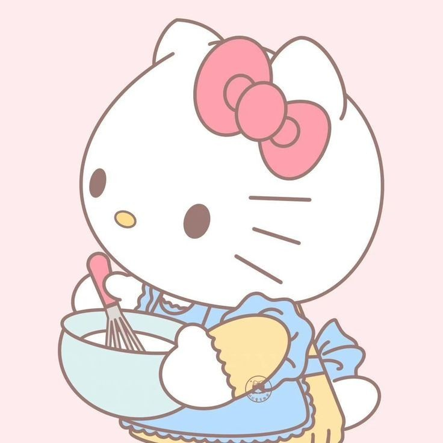

At Sanrio, we believe that every day is a little sweeter with a treat in hand! Our characters, from Hello Kitty to Cinnamoroll, are always surrounded by delicious, sugary goodness. Whether it’s a simple chocolate bar or an elaborate dessert, our friends know that sweets are a great way to spread joy and happiness. These treats not only satisfy their sweet cravings but also bring smiles to everyone around them. After all, life is too short not to indulge in something sweet from time to time!

A Love for All Things Sweet
Sanrio characters aren’t just cute—they’re passionate about sweets too! Whether it’s Hello Kitty's love for strawberry shortcake or My Melody’s fondness for macarons, these characters can always be found enjoying their favorite treats. From sugary pastries to fruity candies, each Sanrio friend has their go-to sweet that makes their day brighter. This deep love for sweets isn't just about flavor; it's about the happiness that comes with each bite. It’s the simple joy of enjoying something delicious that makes their hearts (and ours) smile!